Aesthetic3D: Incorporating Shape Aesthetic Measures into 3D Modeling Interfaces
Deng Yu1 Jianing Guo2 Hui Ye3 Pengjie Ren2* Hongbo Fu4* Manfred Lau5*
1 School of Artificial Intelligence, Shandong University
2 School of Computer Science and Technology, Shandong University
3 Department of Interactive Media, Hong Kong Baptist University
4 Division of Arts and Machine Creativity, HKUST
5 Department of Computer Science, Lakehead University
* Corresponding author
Accepted by ACM SIGGRAPH I3D 2026
[Paper] [Dataset & Code]
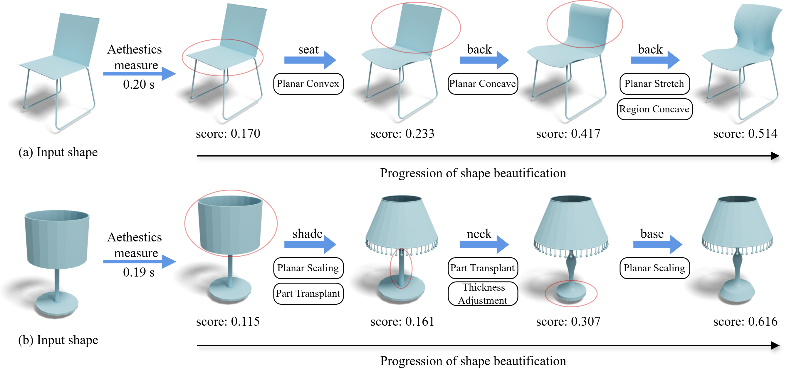
Fig 1: Progression of shape beautification with our Aesthetic3D. Given an input shape (a) or (b), Aesthetic3D can compute aesthetic scores for them at real-time speed, and provide a suite of aesthetics-driven editing tools (see example tools under each arrow), letting users effectively adjust 3D shapes based on the computed scores until the desired aesthetic effects are achieved.
Abstract
3D Aesthetics is significant in digital design, shaping how users experience real-time 3D content in games, VR, and product design. However, creating aesthetically pleasing shapes remains challenging due to diverse subjective standards and the lack of tools that support aesthetics-driven editing. Users often rely on intuition without explicit guidance on visual appeal, making aesthetics refinement slow, inconsistent, and cognitively demanding, particularly in fast-paced, iterative workflows. To address this challenge, we conducted in-depth interviews with design experts to identify challenges in aesthetics-oriented modeling workflows. Based on the findings, we developed Aesthetic3D, a 3D modeling interface that provides real-time aesthetics scores learned from human perceptual data. Furthermore, Aesthetic3D seamlessly integrates the learned aesthetics measures into intuitive editing operations, enabling aesthetics-driven exploration and refinement of shape geometry. We evaluated Aesthetic3D through an ablation study, an open-ended study, and three generalization evaluations. Comprehensive experiments show that with Aesthetic3D, users can easily and effectively enhance the aesthetics appeal of 3D shapes.
3D Aesthetic Moldeling Walkthrough
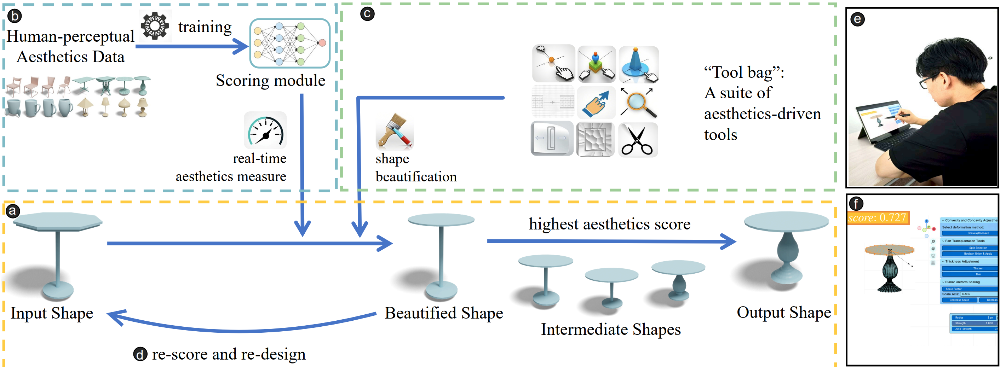
Fig. 2: Modeling walk-through of Aesthetic3D (a-d) and current design (e-f). During modeling (a), aesthetic scoring module (b) and aesthetics-driven editing tools (c), make aesthetic enhancement perceptible, measurable, editable, and iterative (d). The user (e) can easily adjust the aesthetic appeal of a 3D object by scaling the table surface with a stylus pen on our UI. (f) shows the screenshot of a designed shape in editing mode..
Neural Aesthetic Scoring

Fig. 3: The details of the neural aesthetic measurement model for our Aesthetic3D.
Aesthetics-driven Editing Tools
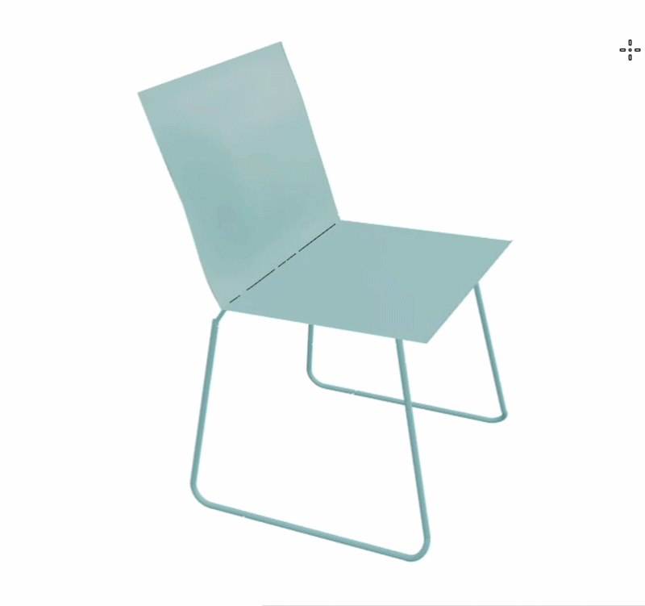
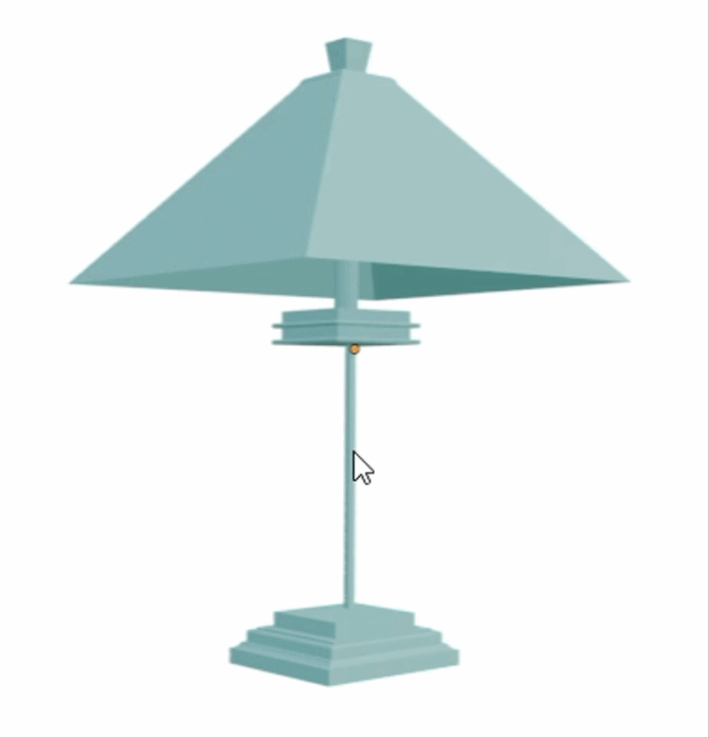
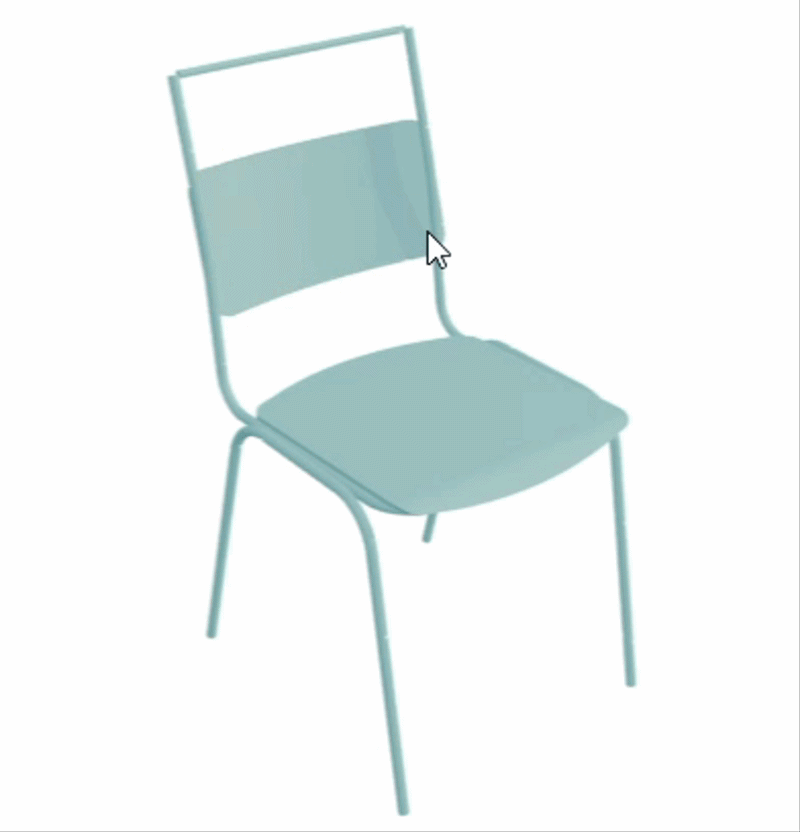
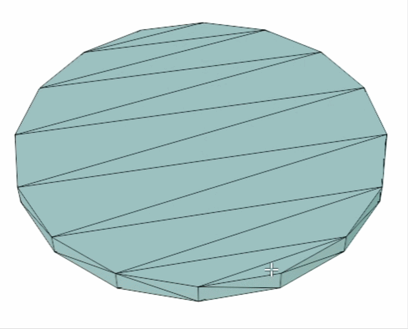
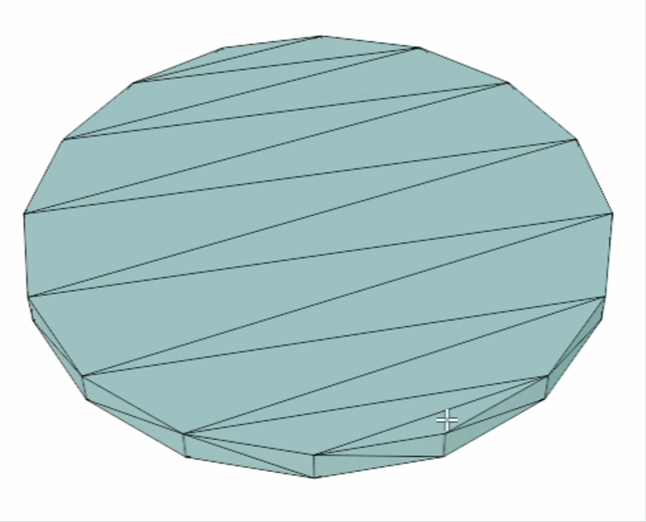
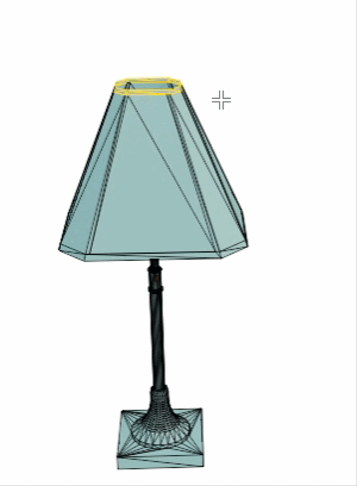
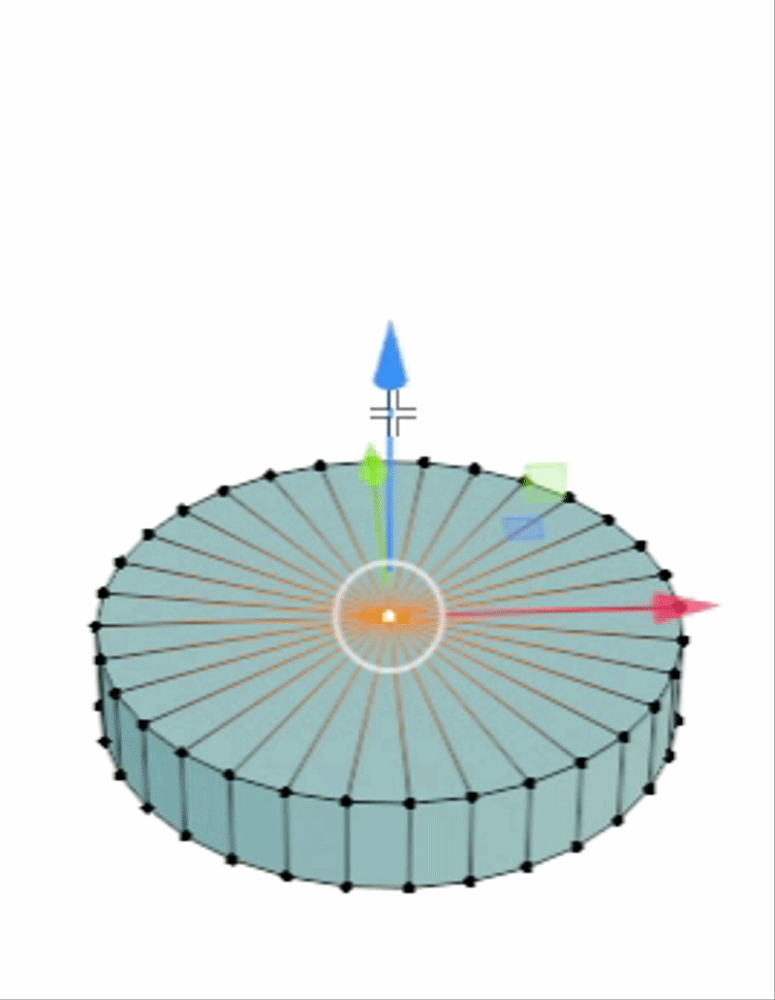
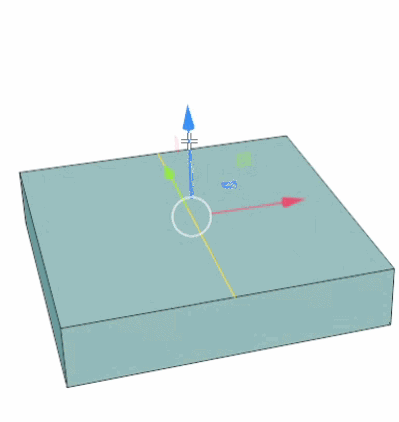
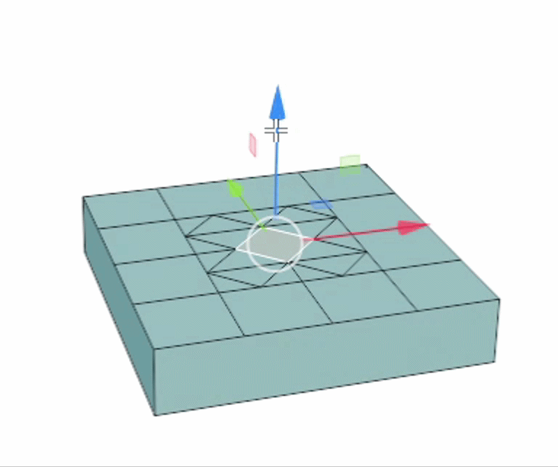
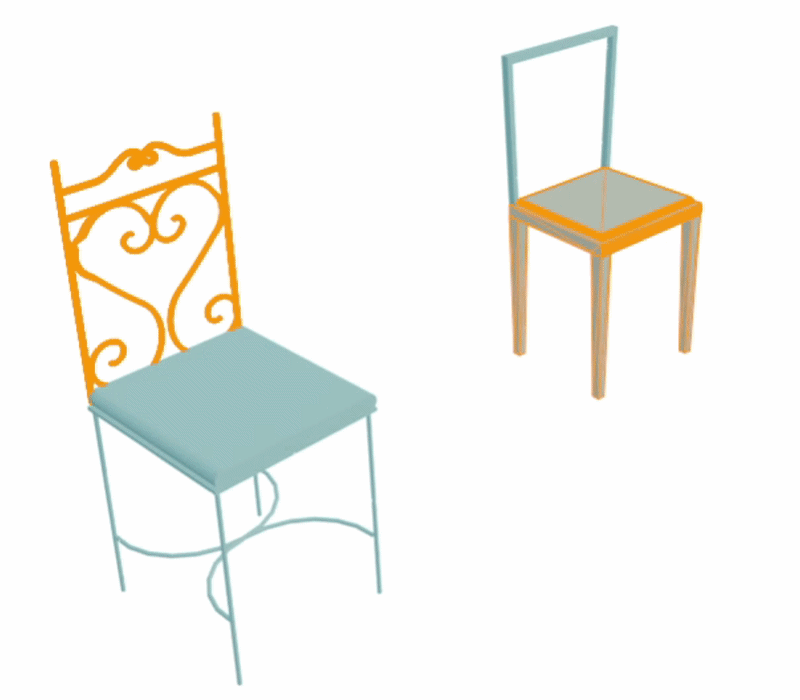
Fig 4: Aesthetic3D support the following operations: (a) surface convexity and concavity adjustment, (b) region thickness adjustment, (c) region moving, (d-e) face subdivision or merge, (f ) planar uniform scaling, (g) vertex dragging, (h) line dragging, (i) face dragging, and (j) part transplant.
Without vs. with our Aesthetic3D
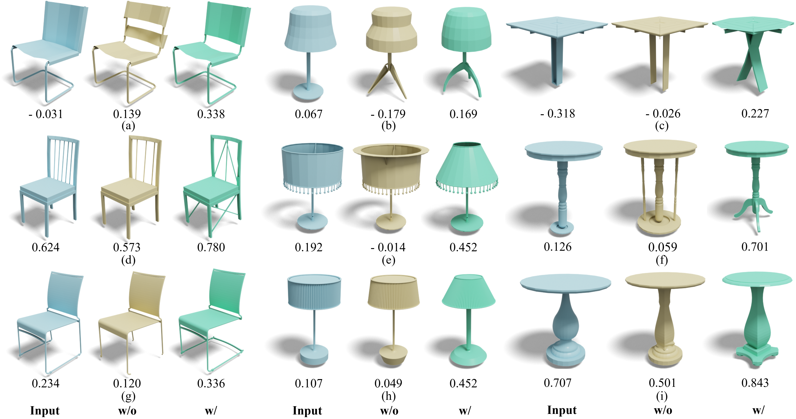
Fig. 5: 3D shape beautification w/o vs. w/. our aesthetics scoring. Given input shapes (blue), we display the ablated results of both without (yellow) and with (green) the aesthetic scoring asides.
Freely 3D beautification using Aesthetic3D

Fig. 6: Four figures show the results of the participants’ explorations.
Applications
- Cross-dataset beautification

Fig. 7: Cross-dataset validation (ShapeNet→ModelNet). Each pair shows the shapes before and after beautification with Aesthetic3D.
- Cross-category beautification

Fig. 8: Cross-category validation. Each pair shows the shapes before and after beautification with Aesthetic3D.
- Aesthetic tastes on Artworks

Fig. 9: Aesthetic3D applied to artworks that already conform to common aesthetic preferences: violin, Apple logo, and Venus statue, shown before and after beautification.
Demo video
Citation
@article{yu2026aesthetic3D,author = {Yu, Deng and Guo, Jianing and Ye, Hui and Ren, Pengjie and Fu, Hongbo and Lau, Manfred},title = {Aesthetic3D: Incorporating Shape Aesthetic Measures into 3D Modeling Interfaces},journal = {Proc. ACM Comput. Graph. Interact. Tech.},year = {2026},issue_date = {May 2026},volume = {9},number = {1},doi = {10.1145/3804501}}